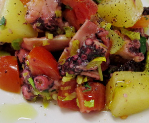

Insalata di polpo
5,5 von 6Vorgekochter polpo aus "eataly" in Salzwasser 5 min kochen und in klein Stücke schneiden.
Stangensellerie, Tomaten, Petersilie, geschwellte Kartoffelwürfel zum Polpo geben. Olivenöl und Zitonensaft dazu und mit Salz und Pfeffer abschmecken.
